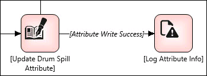

No
You can write entire UDA of array type to System Platform using a variable of array type within a workflow. However, unlike Read operation, you cannot write specific index of UDA of array type.
To configure AttributeReadWrite activity to perform a write operation.
The Attribute Operation Configuration window appears.
Authentication User Information and Verifier User Information is required only if the attribute requires a secure write.
The variable and type can be added from Variables property in Start activity.
For write operation, the Galaxy Browser appears in the Condition drop-down list. The browser appears only if the workflow is designed in the IDE context.
The Relative Reference dialog box appears. This dialog box displays support for relative referencing. Except for Me, you must manually enter all other relative references. For more details about relative referencing, see Relative Referencing.

The workflow can be viewed in the Process Execution View page. In the Execution View, the details of the Read/Write activity executed in a workflow appears in the Step Details tab. The Execution View page can be opened by double-clicking a top level row in any of the reports. The View represents the workflow up to the activity or execution status where the view is opened.
If any error occurs during Write operation, the error message will be logged with an appropriate error code generated from System Platform in the ArchestrA Logger.
For more information about the error logs, see MxStatusDetail ValuesSystem under the section Status and Error Codes of the MXAccess Toolkit User’s Guide of System Platform documentation.